Au service de la solidarité mutualiste et de la marche vers la Couverture Santé Universelle, sans jamais confondre les deux mécanismes.
MX-CONNECT est une plateforme en ligne qui permet aux mutuelles de santé communautaires de gérer leurs adhérents, leurs cotisations, leurs garanties et leur comptabilité, et aux formations sanitaires de vérifier les droits d’un patient, de déclarer les soins et de suivre leurs factures. Un réseau social communautaire relie les mutuelles, les associations et les citoyens autour de projets aux résultats vérifiables. La plateforme ne détient aucun fonds et ne publie aucun chiffre qui ne soit réel. Elle est éditée par l’ONG camerounaise ARAILD et fonctionne en production depuis 2026.
| Nature | Plateforme web multi-organisations (SaaS) et application Android |
| Utilisateurs | Mutuelles, formations sanitaires, adhérents, associations, citoyens, autorités |
| Statut | En production ; application Android en bêta |
| Langues | 7 : français, anglais, portugais, espagnol, arabe, kiswahili, haoussa |
| Comptabilité | Référentiel SYSCOHADA révisé (OHADA) |
| Éditeur | ARAILD, Yaoundé (Cameroun) |
| Accès | m.araild.com |
Le ménage rejoint une mutuelle et choisit une formule ; reçus pour chaque cotisation.
Carte de membre à QR code signé, aussi disponible dans l’espace adhérent.
Le centre de santé vérifie les droits en quelques secondes et déclare les soins.
Si la personne n’est pas enrôlée, orientation volontaire vers la CSU officielle.
Les mutuelles de santé communautaires sont un relais de proximité pour les ménages, dont de nombreux travailleurs de l’économie informelle. Leur gestion reste souvent manuelle, ce qui limite la confiance et la qualité des services.
Au guichet, le centre de santé ne peut pas confirmer qu’un adhérent est à jour : retards, refus, litiges.
Registres papier, reçus manquants, comptes difficiles à présenter : la confiance s’érode.
Aucune donnée agrégée fiable pour piloter, comparer ou rendre compte aux autorités.
| Module | Fonctions principales | Statut |
|---|---|---|
| Adhésions et formules | Adhérents et ayants droit, catalogue de formules, garanties, plafonds, délais de carence, changement de formule contrôlé | Disponible |
| Cotisations et trésorerie | Encaissement au guichet avec reçu, échéanciers, droit d’adhésion, annulation validée par une seconde personne, délai de grâce | Disponible |
| Prises en charge | Calcul automatique de la part de la mutuelle, accords préalables, médecin-conseil, pharmacie, dérogations, cas d’urgence | Disponible |
| Comptabilité | Journal, balance, grand livre, compte de résultat, bilan simplifié, clôture d’exercice, budget | Disponible |
| Espace prestataire de soins | Un seul compte pour toutes les mutuelles conventionnées, lecture du QR code, bordereaux de facturation, suivi des paiements, avis des mutuelles | Disponible |
| Espace adhérent | Carte, attestation, reçus, prises en charge, demandes de modification, réclamations | Disponible |
| Pilotage | Tableau de bord, taux de recouvrement, sinistralité, rapports d’activité, export Excel | Disponible |
| Réseau communautaire | Pages des mutuelles, projets à résultats vérifiés, opportunités, engagement citoyen | Disponible |
| Application Android | Accès au réseau et à l’espace adhérent depuis un téléphone | Bêta |
| Facilitation de la CSU | Information, orientation volontaire vers l’enrôlement officiel, suivi distinct du statut mutualiste | Sous convention |
| Paiement mobile, SMS | Prévus après le choix d’opérateurs agréés ; jamais simulés en attendant | Non disponible |
« Disponible » : en service sur la plateforme en production. « Bêta » : en essai auprès d’utilisateurs. « Sous convention » : développé seulement dans un cadre défini avec les autorités sanitaires.
À côté de la gestion, MX-CONNECT offre un réseau social ouvert à tous, gratuit pour les citoyens, accessible sur le web et dans l’application Android. Il rend visibles les mutuelles et les initiatives locales, et relie ceux qui ont besoin d’aide à ceux qui peuvent agir.
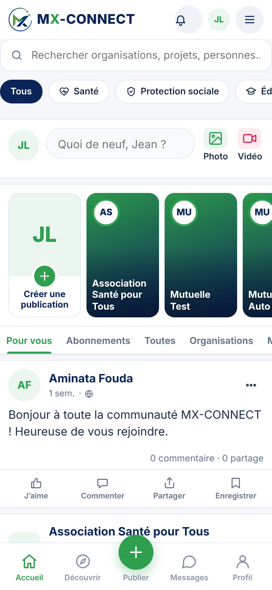
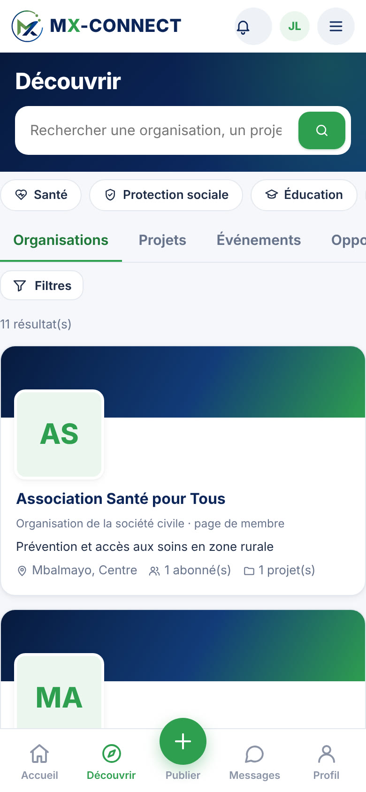
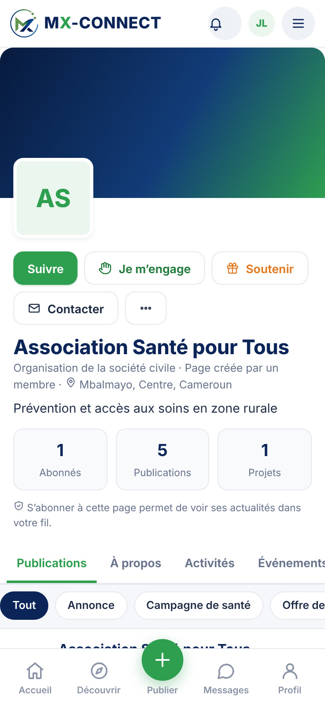
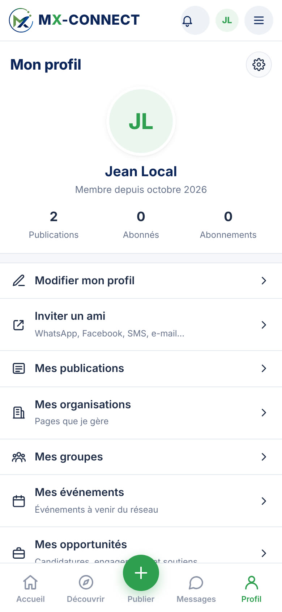
Chaque mutuelle a sa page publique ; les membres peuvent créer des pages pour leurs associations. Le badge « vérifié » n’est accordé qu’au vu d’un agrément.
Texte, jusqu’à 6 photos, vidéos et vidéos courtes, documents PDF, sondages ; réactions, commentaires, partages, mentions et mots-clés.
Groupes publics ou privés animés par les mutuelles : comité des membres, sensibilisation, entraide.
Demande d’adhésion à une mutuelle depuis sa page, avec pièces justificatives conservées en privé.
Échanges entre un membre et sa mutuelle ; notifications dans l’application et par e-mail, désactivables.
7 langues, dont l’arabe écrit de droite à gauche ; mode allégé automatique pour les connexions lentes.
Avec un numéro de téléphone ou une adresse e-mail, gratuitement.
Suivre les mutuelles et les organisations de son territoire et de ses domaines d’intérêt.
Adhérer à une mutuelle, s’engager comme bénévole, soutenir un projet, postuler à une offre.
Voir l’avancement et les résultats des projets ; recevoir les nouvelles de sa mutuelle.
Chaque organisation présente ses projets : zone, calendrier, avancement en %, bénéficiaires, partenaires, publications liées.
Indicateurs avec objectif, valeur atteinte et source. La mention précise s’ils sont déclarés par l’organisation ou vérifiés.
Bénévolat, compétences, matériel, expertise ou partenariat. Tout financement se règle directement avec l’organisation.
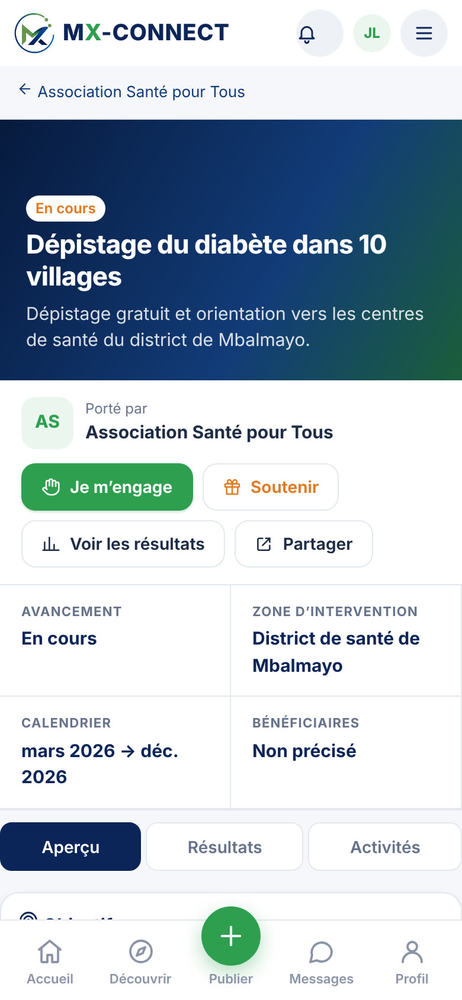
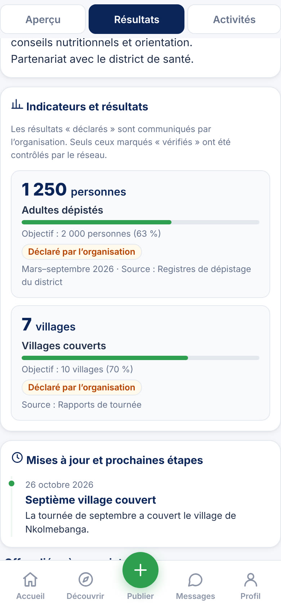
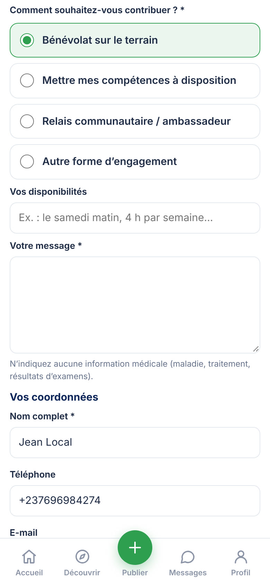
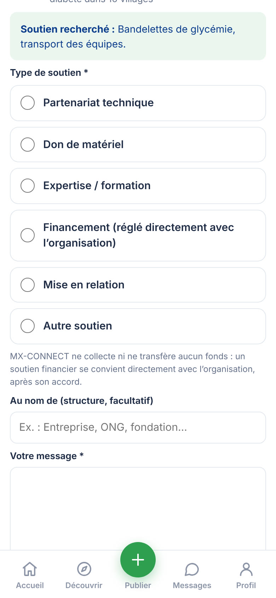
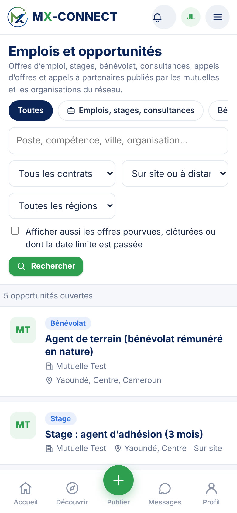
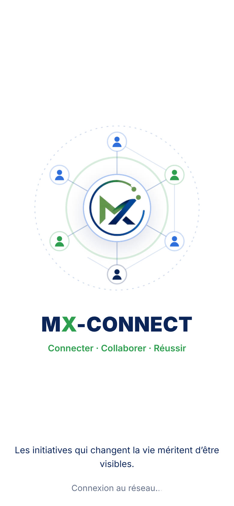
| Bénéficiaire | Avantages concrets |
|---|---|
| Citoyens et ménages | Trouver une mutuelle près de chez soi et y adhérer en ligne ; s’informer sur la santé et la CSU dans sa langue ; accéder à des offres d’emploi et de bénévolat ; participer à la vie de sa communauté. |
| Adhérents des mutuelles | Retrouver sa carte, ses reçus et ses prises en charge dans « Mon adhésion » ; écrire à sa mutuelle ; suivre ses annonces, assemblées et groupes ; recevoir les notifications utiles. |
| Mutuelles de santé | Une vitrine publique gratuite ; recrutement d’adhérents par l’adhésion en ligne ; communication directe avec les membres ; transparence sur les projets et les résultats, qui renforce la confiance. |
| Associations et organisations | Présenter leurs projets et leurs résultats ; recevoir des bénévoles, des compétences et des partenaires ; publier leurs offres ; documenter leur impact avec des sources. |
| Jeunes et volontaires | Trouver une mission, un stage ou un emploi ; valoriser leur engagement ; devenir relais de sensibilisation à la protection sociale. |
| Partenaires et bailleurs | Repérer des initiatives locales crédibles ; distinguer résultats déclarés et résultats vérifiés ; entrer en contact sans intermédiaire financier. |
| Autorités publiques | Un canal d’information de proximité ; des initiatives communautaires visibles par territoire et par domaine. |
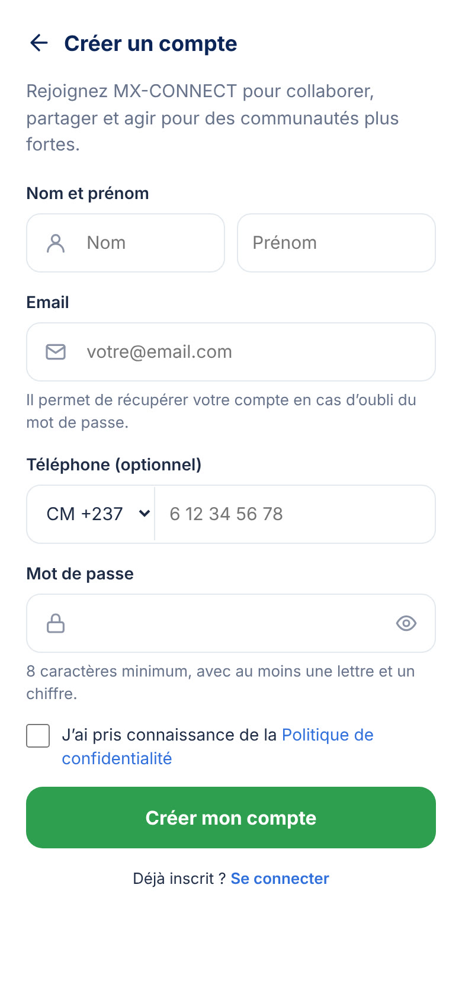
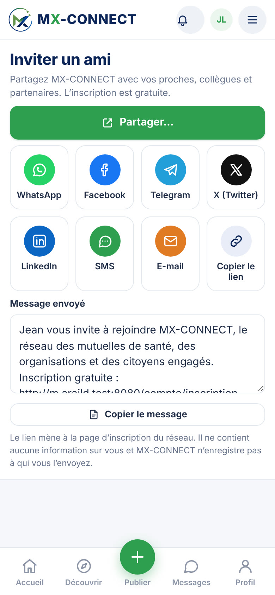
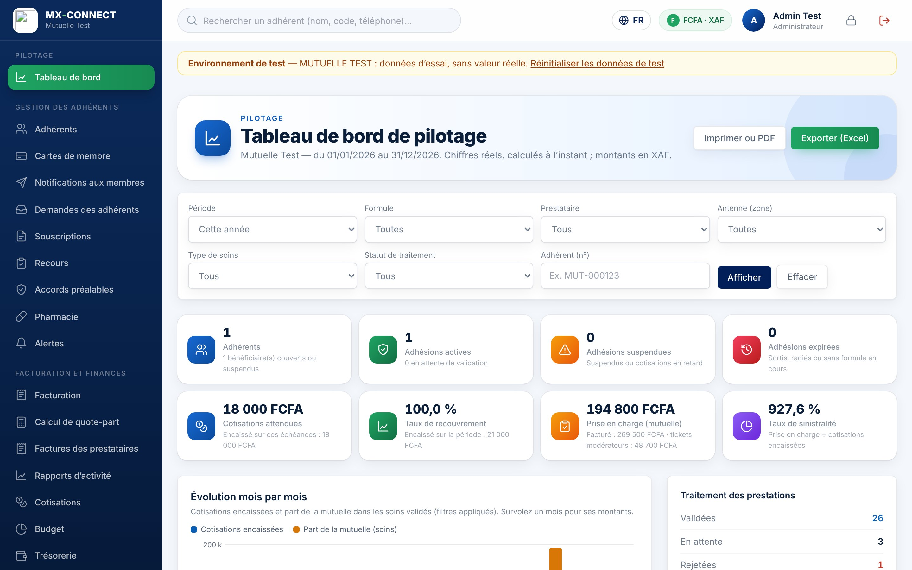
Mutuelle · Tableau de bord de pilotage. Adhésions, cotisations, recouvrement, prises en charge, sinistralité ; filtres par formule, prestataire, zone ; export Excel.
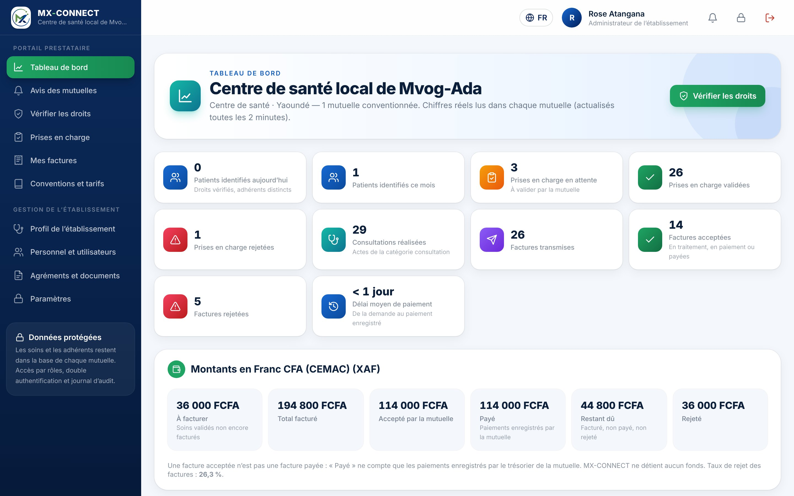
Formation sanitaire · Espace prestataire. Un compte pour toutes les mutuelles conventionnées : patients, prises en charge, factures, montants par devise.
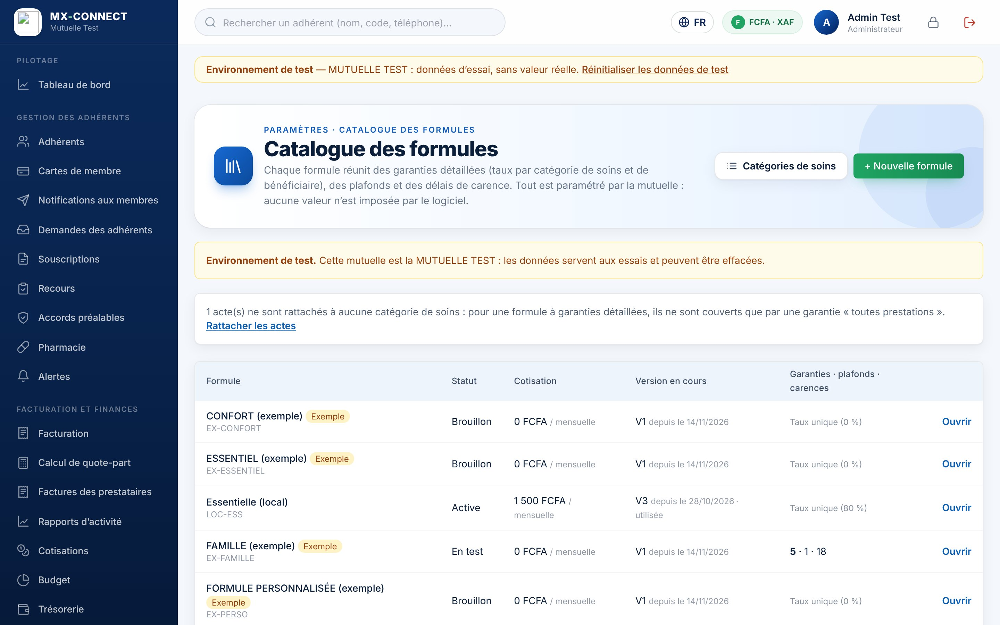
Mutuelle · Catalogue des formules. Garanties, plafonds et délais de carence fixés par la mutuelle ; aucune valeur imposée.
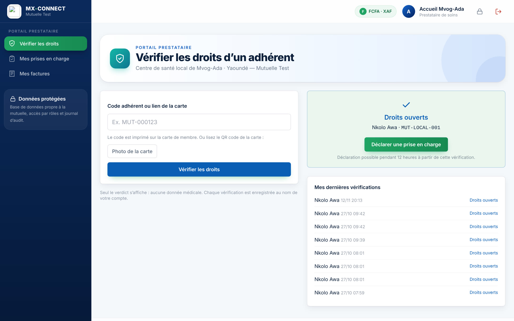
Formation sanitaire · Vérification des droits. Lecture de la carte ou du QR code ; réponse immédiate et journalisée.
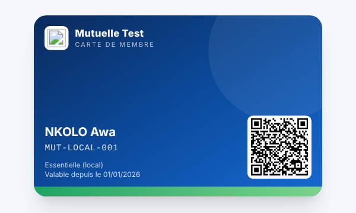
Adhérent · Carte de membre. Format carte bancaire, QR code signé vérifiable par les formations sanitaires.
Captures réalisées sur l’environnement de test de la plateforme (« MUTUELLE TEST »), en novembre 2026. Les noms et les montants sont des données d’essai, sans valeur réelle.
Des droits clairs, une carte vérifiable, des reçus pour chaque paiement, un accès accompagné à la CSU.
Une gestion en ligne, des comptes présentables, des cotisations tracées, la confiance des membres.
Des droits vérifiés en quelques secondes, des factures suivies jusqu’au paiement, moins de fraude.
Des relais de proximité et des données agrégées validées, sans régime parallèle.
Volontariat, projets locaux aux résultats vérifiés, sensibilisation à la CSU.
| Cadre | Contribution de MX-CONNECT |
|---|---|
| Objectifs de développement durable, cible 3.8 (couverture sanitaire universelle)5 | Renforce la protection financière des ménages par la mutualisation et l’orientation vers la CSU. |
| OMS, Stratégie mondiale pour la santé numérique 2020‑20256 | Outil centré sur les personnes, protection des données, gouvernance par les acteurs nationaux. |
| Principes pour le développement numérique7 | Conçu avec les utilisateurs, adapté au mobile, multilingue, réutilisable dans d’autres districts. |
| SND30 et Plan stratégique national de santé numérique 2026‑2030 (Cameroun)3 | Numérisation d’un maillon communautaire ; interopérabilité à définir avec le MINSANTE. |
| SYSCOHADA révisé (OHADA) | Plan comptable et états financiers des mutuelles conformes au référentiel régional. |
| Protection des données personnelles (loi n° 2024/017)8 ; économie sociale (loi n° 2019/004)9 | Minimisation, consentement, accès limité aux personnes habilitées ; respect du statut des mutuelles. |
Les cibles chiffrées seront fixées avec un comité technique après une enquête de référence. Une personne orientée n’est jamais comptée comme enrôlée.
Document public. Reproduction et diffusion autorisées avec mention de la source : « ARAILD, MX-CONNECT, dossier de présentation v2.1, novembre 2026 ». Les chiffres sont cités tels que publiés par leurs sources, qui ne mesurent pas toujours la même chose. Les références juridiques sont à confirmer au Journal officiel. MX-CONNECT est un nom de produit d’ARAILD.